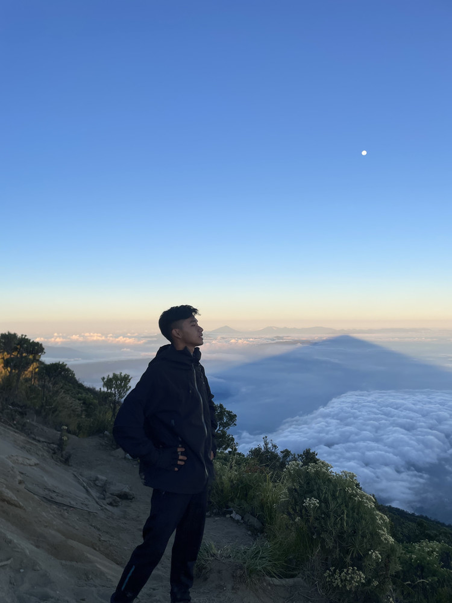

Jalan pulang dari gunung: tentang berani berjalan pelan
Di ketinggian, aku belajar kalau sampai tujuan bukan satu-satunya hal yang penting.
Baca cerita ↗DIDA PERMANA / PERSONAL LOG
Tentang teknologi, perjalanan, dan hal yang sedang gue pelajari.

FIELD NOTES / 01/ POSTS
Perjalanan · Belajar · Teknologi
Di ketinggian, aku belajar kalau sampai tujuan bukan satu-satunya hal yang penting.
Baca cerita ↗Tentang kopi yang masih hangat, kabar dari rumah, dan sore yang tidak terburu-buru.
Baca cerita ↗<html>
hari ini belajar
bikin sesuatu,
bukan cuma
memikirkannya.
</html>● ● ●Catatan proses bikin sesuatu yang awalnya terasa rumit jadi sedikit lebih masuk akal.
Baca cerita ↗Belum ada cerita yang cocok. Coba kata kunci lain, ya.
CONTACT